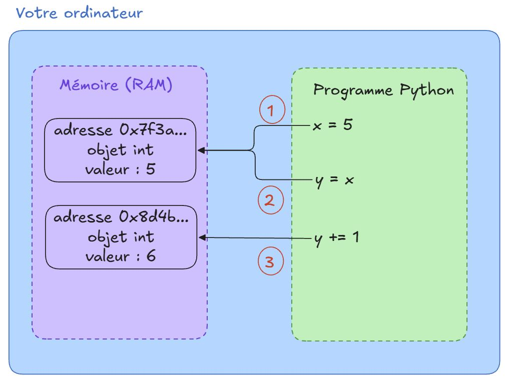
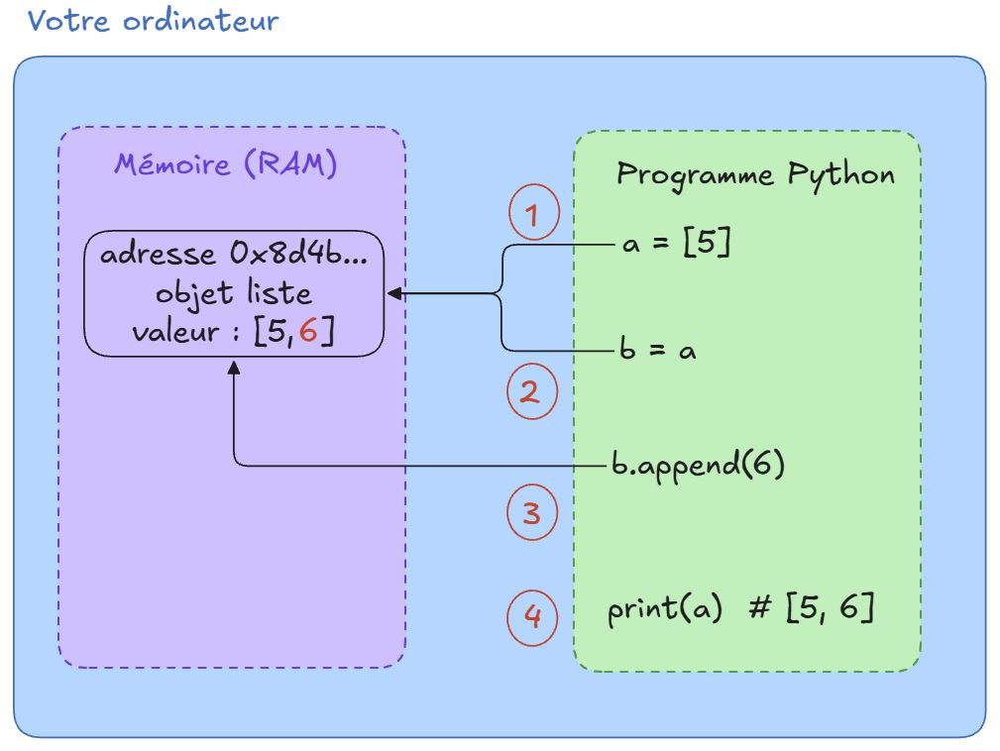

Variables et types de base
Pour accéder aux notebooks d’exercices c’est ici 👇


C’est quoi une variable ?
Une variable, c’est un nom qu’on associe à une valeur. Ce nom permet de retrouver la valeur plus tard dans le programme.
age = 25 # age est un entier (int)
prenom = "Jessica" # prenom est une chaine de caractère (str)
taille = 1.75 # taille est un flottant (float)
majeur = True # majeur est un booléen (bool)Ici, on a créé quatre variables :
agedésigne 25prenomdésigne “Jessica”tailledésigne 1.75majeurdésigne True
En Python, age = 25 ne veut pas dire « age est égal à 25 », mais « on associe le nom age à la valeur 25 ». C’est une affectation.
C’est pour ça que x = x + 1 est parfaitement valide : on prend la valeur actuelle de x, on ajoute 1, et on associe le résultat au nom x.
Une variable est une étiquette, pas une boîte
On présente souvent une variable comme une boîte dans laquelle on range une valeur. C’est une image pratique pour débuter, mais elle est fausse en Python, et elle finit par provoquer des bugs difficiles à comprendre.
En réalité, une variable est une étiquette collée sur un objet stocké dans la mémoire de l’ordinateur (la RAM). Voici ce qui se passe concrètement 👇

Étape 1 : x = 5
Python crée d’abord un objet de type int de valeur 5 quelque part dans la RAM, à une adresse donnée (ici 0x7f3a...). Ensuite seulement, il associe le nom x à cette adresse.
Autrement dit, x ne contient pas 5 : x sait où trouver l’objet 5.
x = 5
print(id(x)) # l'adresse mémoire de l'objet désigné par xÉtape 2 : y = x
On pourrait penser que Python copie la valeur de x dans une nouvelle boîte y. Ce n’est pas le cas : aucun nouvel objet n’est créé. Le nom y reçoit simplement la même adresse que x.
On a donc deux étiquettes collées sur le même objet.
y = x
print(id(x), id(y)) # les deux adresses sont identiques
print(x is y) # True : x et y désignent le même objetÉtape 3 : y += 1
C’est l’étape clé. Les entiers sont immuables en Python : l’objet 5 ne peut pas être modifié. Python ne transforme donc pas le 5 en 6. À la place, il :
- lit la valeur de l’objet désigné par
y(5) ; - calcule le résultat et crée un nouvel objet
6à une autre adresse (ici0x8d4b...) ; - décolle l’étiquette
ypour la recoller sur ce nouvel objet.
L’étiquette x, elle, n’a pas bougé : elle désigne toujours l’objet 5.
y += 1
print(x, y) # 5 6
print(id(x), id(y)) # les adresses sont désormais différentes
print(x is y) # False- Une variable est un nom qui désigne un objet en mémoire.
y = xne copie rien : les deux noms partagent le même objet.- « Modifier » un
int, unfloat, unstrou unboolcrée toujours un nouvel objet, car ces types sont immuables.
Les listes, que nous verrons plus en détail plus tard, permettent de regrouper plusieurs valeurs. Observez le code suivant sans l’exécuter :
a = [5]
b = a
b.append(6) # ajoute 6 à la fin de la liste b
print(a)- Selon vous, qu’affiche
print(a)? - Dessinez, comme dans le schéma précédent, ce qui se passe en mémoire à chaque ligne.
- Exécutez ensuite le code pour vérifier votre hypothèse.
a = [5]
b = a
b.append(6)
print(a) # [5, 6]Surprise : a a été modifiée alors qu’on n’a touché qu’à b !

Contrairement aux entiers, les listes sont mutables : elles peuvent être modifiées sur place.
- Ligne 1 : Python crée un objet liste
[5]en mémoire et lui colle l’étiquettea. - Ligne 2 :
b = ane copie rien,best une deuxième étiquette sur la même liste. - Ligne 3 :
b.append(6)ne crée pas de nouvel objet, il modifie la liste existante. Aucune étiquette ne bouge. - Ligne 4 :
adésigne toujours cette même liste, qui contient maintenant[5, 6].
C’est la différence clé avec l’exemple y += 1 : avec un entier, Python crée un nouvel objet et recolle l’étiquette ; avec une liste, il modifie l’objet lui-même, et toutes les étiquettes qui le désignent « voient » le changement.
Pour obtenir une liste indépendante, il faut une copie explicite :
a = [5]
b = a.copy()
b.append(6)
print(a) # [5]
print(b) # [5, 6]Le typage dynamique
En Python, on ne déclare pas le type d’une variable. On écrit simplement age = 25, et l’interpréteur déduit le type à partir de la valeur.
x = 5 # x est un entier (int)
x = "bonjour" # x est maintenant une chaîne (string)
x = 3.14 # x est maintenant un flottant (float)Le type est attaché à la valeur et non pas à la variable. C’est logique : puisqu’une variable n’est qu’une étiquette, on peut la recoller sur un objet de n’importe quel type.
Le typage dynamique rend Python souple, mais il peut introduire des bugs silencieux. Une variable devrait avoir un rôle stable dans un programme.
Le discours « Python ne vérifie pas les types » est vrai pour le langage lui-même. L’interpréteur Python ignore les annotations de type : x: int = "bonjour" ne lève aucune erreur.
Mais certains packages s’appuient sur ces annotations pour ajouter une vérification à l’exécution. C’est le cas notamment de Pydantic (très utilisé en data science et dans les API), de Typeguard et de Beartype. Avec ces outils, une annotation devient une contrainte réelle : si la valeur ne respecte pas le type, une erreur est levée.
Donc : le type hint est un indice pour Python, mais il peut devenir une règle pour certaines bibliothèques.
Les types de base en Python
| Type | Nom Python | Exemples |
|---|---|---|
| Nombre entier | int |
42, -7, 0 |
| Nombre à virgule | float |
3.14, -0.5, 2.0 |
| Chaîne de caractères | str |
"bonjour", 'Alice' |
| Booléen | bool |
True, False |
On peut vérifier le type d’une variable avec la fonction type()
age = 25
print(type(age)) # <class 'int'>
prenom = "Jessica"
print(type(prenom)) # <class 'str'>Opérations de base
Une fois qu’on sait nommer des valeurs, il faut pouvoir les manipuler. Python fournit des opérateurs pour calculer, assembler des chaînes ou comparer des valeurs.
Opérations arithmétiques
Les opérateurs arithmétiques s’appliquent aux nombres (int et float).
| Opérateur | Signification | Exemple | Résultat |
|---|---|---|---|
+ |
Addition | 7 + 3 |
10 |
- |
Soustraction | 7 - 3 |
4 |
* |
Multiplication | 7 * 3 |
21 |
/ |
Division | 7 / 3 |
2.333... |
// |
Division entière (quotient) | 7 // 3 |
2 |
% |
Modulo (reste) | 7 % 3 |
1 |
** |
Puissance | 7 ** 3 |
343 |
a = 10
b = 3
print(a + b) # 13
print(a - b) # 7
print(a * b) # 30
print(a / b) # 3.3333333333333335
print(a // b) # 3
print(a % b) # 1
print(a ** b) # 1000En Python, / renvoie toujours un flottant, même quand le résultat tombe juste :
print(10 / 2) # 5.0 (et non 5)
print(10 // 2) # 5Les opérateurs d’affectation combinée
Modifier une variable à partir de sa propre valeur est si courant que Python propose des raccourcis (vous avez déjà croisé y += 1 plus haut) :
| Raccourci | Équivaut à |
|---|---|
x += 1 |
x = x + 1 |
x -= 1 |
x = x - 1 |
x *= 2 |
x = x * 2 |
x /= 2 |
x = x / 2 |
score = 10
score += 5
print(score) # 15Priorité des opérations
Python respecte les règles de priorité habituelles des mathématiques :
- Parenthèses
() - Puissance
** - Multiplication, division, division entière, modulo (
*,/,//,%) - Addition, soustraction (
+,-)
En cas de doute, utilisez des parenthèses. Elles ne coûtent rien et rendent le code plus lisible.
print(2 + 3 * 4) # 14 (et non 20)
print((2 + 3) * 4) # 20Opérations sur les chaînes de caractères
prenom = "Jessica"
nom = "Hyde"Concaténation et répétition
nom_complet = prenom + " " + nom
print(nom_complet) # Jessica Hyde
print("ha" * 3) # hahahaQuelques outils utiles
| Outil | Rôle | Exemple | Résultat |
|---|---|---|---|
len() |
Longueur | len("Python") |
6 |
.upper() |
Majuscules | "data".upper() |
"DATA" |
.lower() |
Minuscules | "DATA".lower() |
"data" |
.capitalize() |
1re lettre en majuscule | "alice".capitalize() |
"Alice" |
.replace(a, b) |
Remplace a par b | "chat".replace("c", "b") |
"bhat" |
Comme les entiers, les str sont immuables. .upper() ne modifie pas la chaîne, elle en renvoie une nouvelle. Pour garder le résultat, il faut recoller l’étiquette :
mot = "data"
mot.upper()
print(mot) # data → inchangé !
mot = mot.upper()
print(mot) # DATALes f-strings : afficher des variables proprement
Plutôt que d’enchaîner les +, on préfixe la chaîne par f et on place les variables entre {} :
age = 25
print(f"{prenom} a {age} ans") # Jessica a 25 ans
print(f"Dans 10 ans : {age + 10} ans") # calcul possible dans les {}C’est la méthode recommandée en Python moderne.
Contrôler l’affichage
Après la valeur, on peut ajouter : suivi d’un code de formatage :
| Code | Effet | Exemple | Résultat |
|---|---|---|---|
.2f |
2 décimales | f"{3.14159:.2f}" |
3.14 |
.1% |
pourcentage, 1 décimale | f"{0.857:.1%}" |
85.7% |
, |
séparateur de milliers | f"{1234567:,}" |
1,234,567 |
_.2f |
séparateur _ et 2 décimales |
f"{1234567:_.2f}" |
1_234_567.00 |
>10 |
aligné à droite sur 10 caractères | f"{42:>10}" |
42 |
<10 |
aligné à gauche sur 10 caractères | f"{42:<10}" |
42 |
010 |
complété avec des zéros | f"{42:010}" |
0000000042 |
On peut combiner les codes : f"{1482300.5:,.2f}" donne 1,482,300.50.
Python a connu trois générations de formatage. Vous les croiserez toutes dans du code existant.
1. Opérateur % (style C, Python 2)
"Bonjour %s, tu as %d ans" % ("Alice", 25)
"Prix : %.2f€" % 3.14159%s → chaîne, %d → entier, %f → flottant. Encore très présent dans du code legacy.
2. .format() (Python 3.0)
"Bonjour {}, tu as {} ans".format("Alice", 25)
"Prix : {:.2f}€".format(3.14159)
"{prenom} a {age} ans".format(prenom="Alice", age=25)Plus lisible que %, mais verbeux.
3. f-strings (Python 3.6)
prenom, age = "Alice", 25
f"Bonjour {prenom}, tu as {age} ans"
f"Prix : {3.14159:.2f}€"Le code s’écrit directement dans la chaîne. C’est ce qu’on utilise aujourd’hui.
Les trois font la même chose :
prenom = "Alice"
prix = 3.14159
print("Bonjour %s, prix : %.2f€" % (prenom, prix))
print("Bonjour {}, prix : {:.2f}€".format(prenom, prix))
print(f"Bonjour {prenom}, prix : {prix:.2f}€")
# Bonjour Alice, prix : 3.14€ (trois fois)Remarquez que le code .2f est le même partout : ce que vous apprenez avec les f-strings reste valable pour lire l’ancien code.
Conversions de types
Python ne mélange pas les types automatiquement :
age = 25
print("J'ai " + age + " ans") # ❌ TypeErrorIl faut convertir explicitement :
| Fonction | Convertit en | Exemple | Résultat |
|---|---|---|---|
str() |
chaîne | str(25) |
"25" |
int() |
entier | int("25") |
25 |
float() |
flottant | float("1.75") |
1.75 |
bool() |
booléen | bool(0) |
False |
print("J'ai " + str(age) + " ans") # 🆗 J'ai 25 ansbool() renvoie False pour les valeurs « vides » : 0, 0.0, "" (chaîne vide). Tout le reste vaut True, même -42 ou "False".
int("bonjour") lève une ValueError : on ne peut convertir que ce qui a du sens. Cas fréquent en data : des nombres stockés en texte dans un CSV, à convertir avant de calculer.
Opérations de comparaison
Les opérateurs de comparaison renvoient un booléen (True ou False).
| Opérateur | Signification | Exemple | Résultat |
|---|---|---|---|
== |
Égal à | 5 == 5 |
True |
!= |
Différent de | 5 != 3 |
True |
< |
Inférieur à | 5 < 3 |
False |
> |
Supérieur à | 5 > 3 |
True |
<= |
Inférieur ou égal | 5 <= 5 |
True |
>= |
Supérieur ou égal | 5 >= 6 |
False |
print(5 == 5) # True
print(5 != 3) # True
print(10 > 3) # True
print(10 <= 3) # False